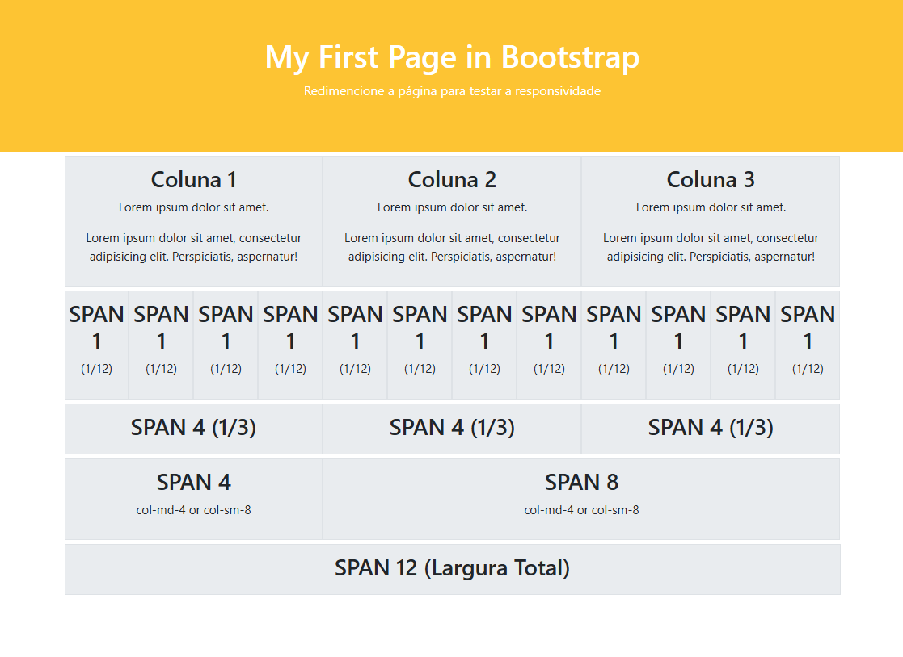
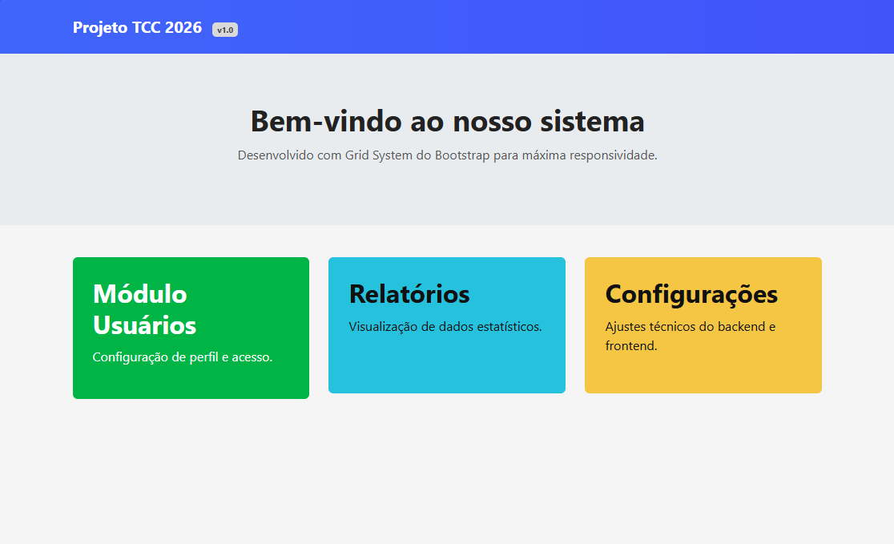
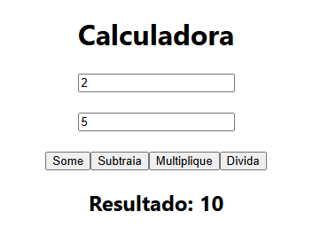
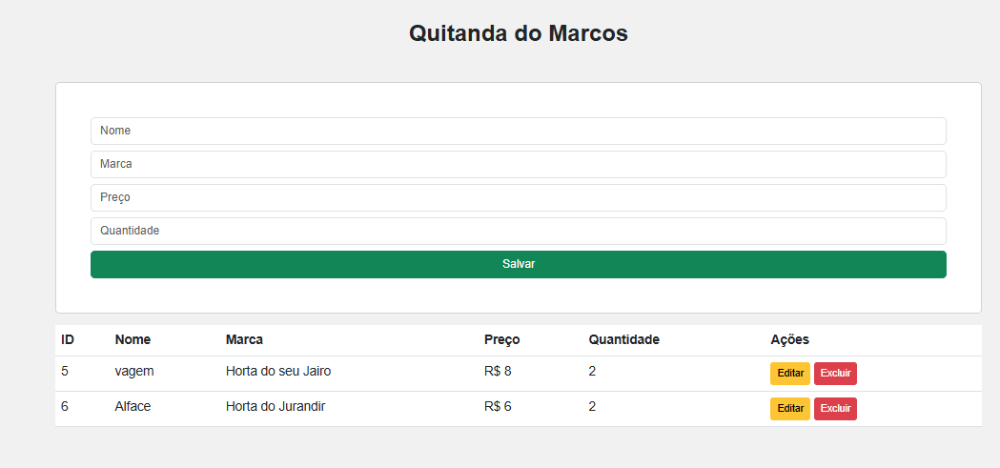
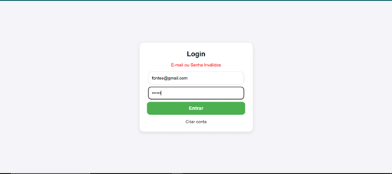
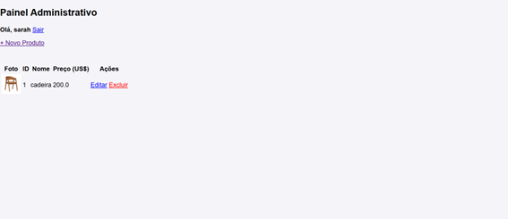
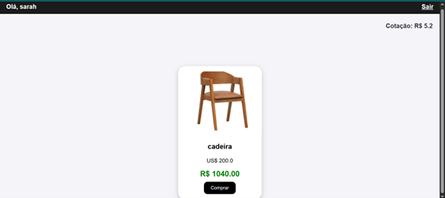
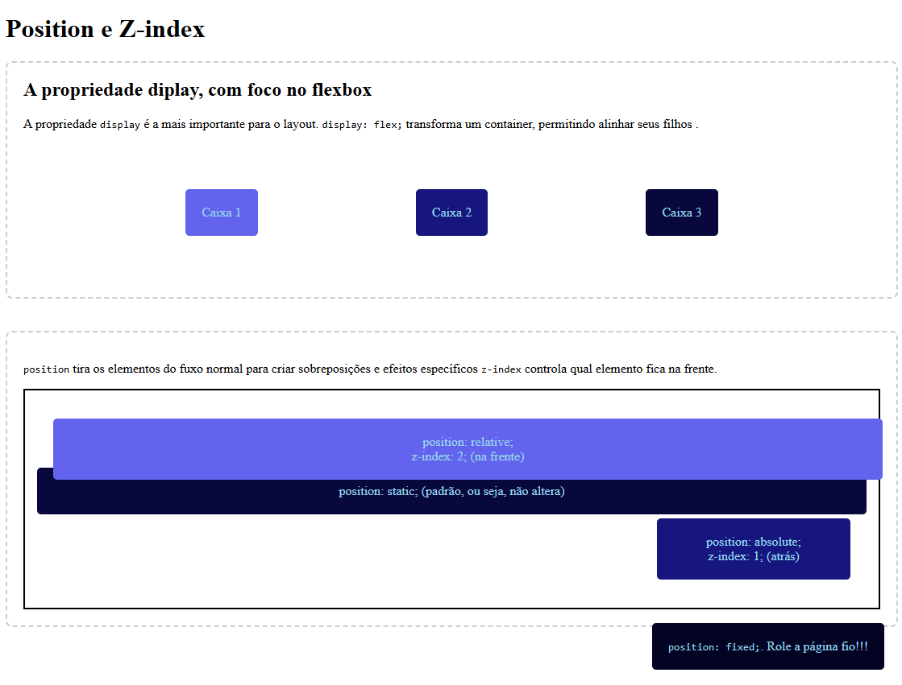

Construção de uma página inicial de sistema utilizando o sistema de grid do Bootstrap para máxima responsividade. O layout organiza cartões coloridos e informativos de módulos, relatórios e configurações, adaptando-se automaticamente a diferentes tamanhos de tela.

Desenvolvimento de interface principal para sistemas de gestão, fundamentada no sistema de Grid do Bootstrap. O layout modular organiza o acesso a funcionalidades como usuários e relatórios, garantindo navegabilidade e adaptabilidade total entre dispositivos.

Desenvolvimento de uma aplicação web de alta precisão voltada para a execução de operações matemáticas básicas em tempo real, tratando escopo de dados e limpezas reativas com manipulação estruturada do DOM.

Sistema de gestão e controle de estoque de produtos alimentícios. A aplicação implementa lógica assíncrona modular para realizar inserção, leitura de listas dinâmicas, edição de valores e exclusão segura.

Interface moderna de login projetada com foco absoluto em usabilidade e segurança. Conta com tratamento dinâmico de erros em formulários, validação em tempo real e feedback visual imediato para o usuário.

O desenvolvimento desta página foca no comportamento elástico do navegador. O código divide a tela de forma matemática para testar o comportamento de containers em resoluções de celulares, tablets e desktops simultaneamente.

Página de visualização do cliente integrada a um sistema de vendas. Exibe o produto cadastrado em formato de card responsivo e realiza o cálculo de conversão monetária automática (US$ para R$) com base na cotação do dia.

Interface para gerenciamento de catálogos em tempo real com fluxo CRUD completo. Permite criar, ler, atualizar e excluir registros (foto, nome e preço) em tabelas dinâmicas com foco em organização.
As especificações técnicas corretas aparecem aqui.